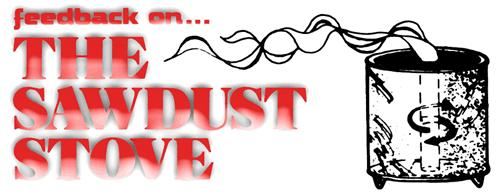

Although I hate to be pessimistic about a good idea, I must offer some cautionary feedback on B. R. Saubolle's article "How to Make and Use a Sawdust Stove" (MOTHER NO. 30). In particular, I want to amplify a warning by the author that the stove "does give off some fumes" and that the room where it's in use "must be well ventilated". Very true . . . but the statement isn't definite enough or strong enough. Combustion in such a device might easily be incomplete, and-instead of giving off only carbon dioxide and water vapor, the gases normally associated with burning-the smoldering fuel might also produce carbon monoxide and hydrocarbon vapors.
The problem is that the combustion process isn't as simple as it might seem, particularly where wood wastes or other complex hydrocarbon mixtures are concerned. For complete burning, each molecule of such a substance must be broken up (eventually into its elements . . . carbon, hydrogen, sometimes oxygen, and others) and gasified (solids and liquids don't burn, but the gases formed from them at elevated temperatures do). If gasification occurs before the total breakdown of the particles, less complex hydrocarbon molecules may be given off as vapors. Or, if the original units do break up completely but don't contact sufficient oxygen to be fully oxidized, carbon (soot) and/or carbon monoxide may be produced.
Both soot and hydrocarbon compounds are usually detectable immediately, either by sight (black smoke) or smell (solvent-like odors). Carbon monoxide, however, is odorless and invisible.
The dangers of these incomplete combustion products vary. Soot is primarily a source of grime, but could cause respiratory problems over long periods. (Once inhaled, the minute carbon particles are deposited deep within the lungs and will not be expelled by breathing.)
Hydrocarbon vapors will cause various problems depending on what specific compounds are present. If any organic acids or aldehydes are produced skin, eye, and respiratory irritation would be likely.
The real killer, though, is carbon monoxide. This substance has an affinity for the oxygen-carrying hemoglobin in the blood which is some 210 times that of oxygen itself . . . and its absorption through respiration therefore prevents proper oxygen intake. Over long periods of continuous exposure, more and more hemoglobin is "tied up" until the bloodstream can no longer carry sufficient oxygen to sustain life.
There's really no way to determine the degree of incomplete combustion-and corresponding danger-in a stove such as the one described in the article. The device must certainly be used with adequate ventilation, as the author stated, but this might make it ineffective as a heat source. At any rate, it would seem inadvisable to use the non-vented heater in a sickroom or other area in which the occupants are sleeping or incapacitated (I'm thinking especially of babies and elderly persons). If combustion were poor, one average night's rest could turn into an eternity.
The larger models of the stove appear safer, since a flue would likely be used to vent any fumes. Nevertheless, anyone who uses either this or the smaller heater for long periods should immediately seek fresh air-preferably outdoors-if headache or dizziness develops.
In case you're wondering, I'm by no means an expert on combustion. As a chemical engineer now working for a government agency on air pollution control, however, I'm often concerned with incineration and with the use of wood waste as fuel . . . and I must emphasize one point: Although various efforts have been made to control air pollution from the burning of wood by controlling the combustion process, such operations have proven very tricky. With many types of combustion devices it's possible to reduce the amount of smoke produced, but not the amount of carbon monoxide. Deaths from poisoning by this deadly gas have resulted in the past from the use of charcoal as an indoor fuel . . . and the principle of the sawdust stove is very similar. I offer these comments in the hope of preventing MOTHER's readers from injuring themselves.
Although I have my doubts about the sawdust stove in the form described, I thank B. R. Saubolle for sharing his knowledge.
|
 |
|
|